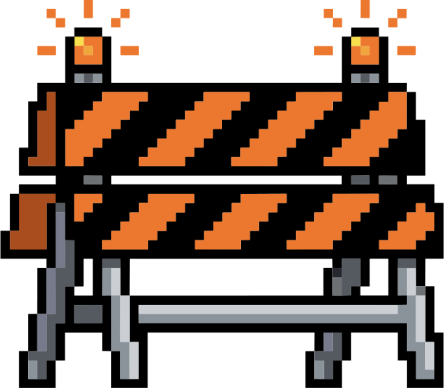

COS30045 Data Visualisation Project
Road deaths get most of the headlines. This story looks at the far larger group who survive but end up in hospital: who they are and where, 2011–2021.
34,033 → 39,505 +16%
Start the journeyCounts are hospital cases (injury episodes) that did not end in death within 30 days of admission. They are not people, and not rates unless stated.
